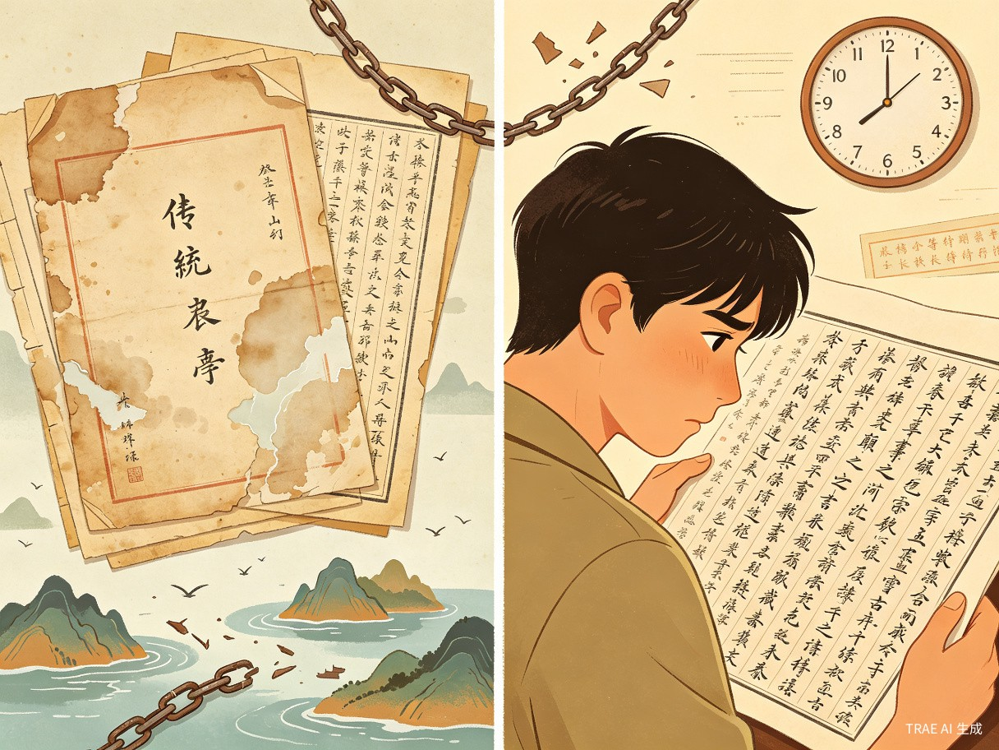
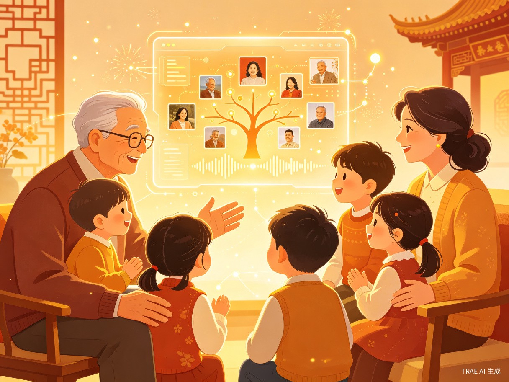

一个关于传承、技术与温度的故事
数字族谱——AI驱动的家族记忆传承平台
传统纸质家谱编纂工程浩大、查询更新困难，导致年轻一代与家族历史出现严重的"断根"危机。
观察到传统家谱30年小修、60年大修导致信息严重滞后，而一位90后开发者制作的电子族谱原型引发大量共鸣，证明数字化记录家族记忆是深埋在每个人心中的文化刚需。
一款结合AI识别与云端管理的微信小程序。
为谁而做，解决什么困扰
25-40岁对家族历史感兴趣的年轻人
有寻根问祖需求的海外侨胞及港澳台同胞
家族长辈及宗亲会组织

传统家谱多为纸质孤本，不仅携带不便、极易因水火等意外损毁，且通常只记载男性血脉，女性成员及旁支信息往往被边缘化甚至遗漏，导致家族记忆存在严重缺失。
纸质家谱"三十年小修，六十年大修"的周期极不适应现代社会的人口流动频率。一旦家族中有新生儿诞生或长辈离世，信息更新往往需要等下一次大修，导致家谱长期处于"过期"状态；且跨地域的宗亲无法协同修改，沟通成本极高。
传统家谱多采用文言文与竖排繁体字，缺乏现代排版与多媒体展示，让习惯了碎片化阅读的年轻一代望而却步。这直接导致了家族历史的"失语"，长辈离世后，那些鲜活的家族故事、家训和人生智慧便随之消散，无法实现真正的代际传承。
对于因历史原因迁徙的海外侨胞或两岸同胞而言，仅凭模糊的地名或长辈口述的线索，在浩如烟海的纸质文献中寻找祖籍地如同大海捞针，缺乏一个权威、互通的数字化寻根桥梁。
社会价值与效率提升的双重赋能

平台将冰冷的文字转化为包含照片、音频、视频的多媒体数字资产，让家谱从"死档案"变成"活历史"。它不仅填补了普通家庭缺乏系统记录工具的空白，更让延续千年的宗谱文化在数字时代重获新生。
为海外侨胞、港澳台同胞提供便捷的寻根通道，打破地域与历史的隔阂，增强全球华人的文化认同感与民族凝聚力。同时，通过线上祭祖、家族圈等功能，为现代都市中逐渐疏离的亲属关系提供情感连接点，促进代际对话与家庭和睦。
突破传统家谱的性别局限，鼓励记录女性成员与多元家庭结构，以更包容、现代的视角书写家族史，体现社会的文明进步。
依托大模型与知识图谱技术，将传统耗时数月至数年的修谱周期缩短至数天；海外寻根从数天翻阅文献缩短至10秒智能匹配，彻底颠覆了传统修谱的低效模式。
支持多人实时在线协作、权限分级管理与自动版本控制，大幅降低家族组织的沟通与统筹成本。
通过极简的交互设计与AI语音转文字、老照片修复等功能，让不擅长使用智能手机的长辈也能轻松参与，真正实现家族文化传承的普惠化。